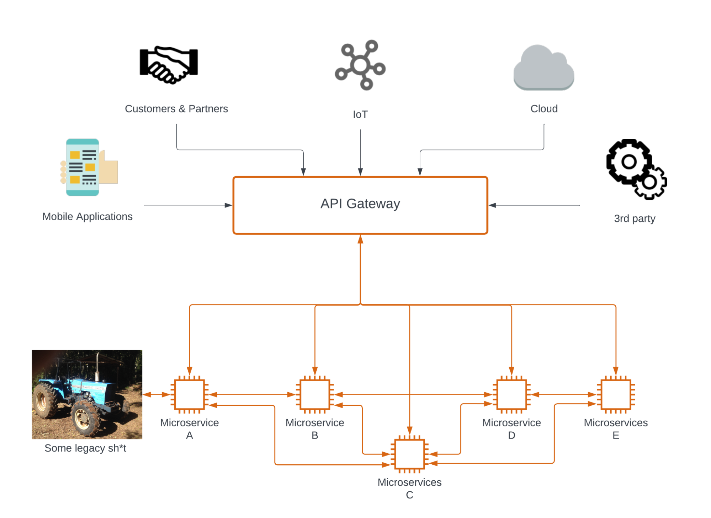

Requirements & API: Analysis
With this chapter, we first will understand why we need requirements for API and their place in the requirements classification frameworks. Then, we review the requirements engineering process and specific aspects you need to consider.
Why do we need requirements for API?
Let's answer why business analysts have suddenly started working on API requirements. About a decade ago, when I began my career in IT as a business analyst, it was not a part of my general BA responsibilities. Now, you can see more job descriptions for BAs, POs, and PMs requiring API knowledge. And I have a subjective explanation of why that happened.
The leading software architecture approach back then was an on-premise deployed monolithic application. Simply, that was a tied backend service that communicated with a desktop or web UI client. That backend was integrated with several internal or external services in different ways, such as file upload via FTP.
A Business analyst focused on business capabilities and their representation on the UI side, plus requirements for integrations such as mappings and request logic. The detailed interaction across the backend, UI client, and integrated system was the responsibility of tech folks.
But things started moving when Cloud, SaaS, and Microservices architecture (MSA) became a dominant trend for system design:

Because of those trends, systems become more interconnected than ever before. Some services become API-first, meaning you can only use them through their APIs. So, API becomes a business model with higher-level requirements. With that, you get stakeholders, regulations, restrictions, etc. The stuff a business analyst, product owner, and product manager takes care of.
The number of API clients has increased exponentially, including those on the web, mobile applications, IoT, etc. Additionally, microservices communicate with each other within a system through APIs. Thus, there are many external and internal clients, vertically and horizontally, each with its stakeholders and specific needs.
Another crucial aspect is that APIs are more vulnerable to attacks as they provide a direct way to break into a system. So, we are not just designing and implementing API but also ensuring their security.
To summarize, the "businessfication" of API due to the rise of Cloud, MSA, and SaaS, increased number of clients, high-security risks, and, last but not least, imposed industry and government regulations have made API also a zone of interest for all kinds of business folks.
That is not a comprehensive explanation of that shift, but that is how I see it from my perspective. I would like to see your thoughts in the comments.
Requirements classification
Before diving into BA theory, let's clarify that API requirements are not functional. UI is the closest analogy. There is a system capability (function) and several ways for users to access it. In the previous chapter, we identified API as a distribution channel. And that is the same for any public interface: UI, Command-line interface (CLI), Chatbots, etc.
You can express a functional requirement through API design. However, API itself is not a direct concern of system capabilities. Going back to the UI analogy: the design patterns, components you choose to use, or color scheme are crucial for UX, but we don't call them functional requirements.
For example: "System shall return a list of X items filtered by Y and sorted by Z" that is a functional requirement. However, how you return this list to UI and API might differ. If a single front-end utilizes that API endpoint, it is enough to describe how from a UI perspective. This single client acts as the primary stakeholder here. But if several clients want to get the list for their purpose, we need to spend additional time communicating with them and aligning on expectations of what they need to get and why. The outcome might differ significantly from how you return those list items for UI.
Ok, API requirements are not functional, so what type of requirements do they belong to? Let's review several sources.
In the recent "Software Requirements Essentials" by K. Wiegers and C. Hokanson define "External interface requirement":
A description of a connection between the solution being built and other elements of the world around it, including users, other software systems, hardware devices, and networks.
The classic "Software Requirements," 3rd edition by K. Wiegers and J. Beatty, highlights the interconnection between non-functional requirements and interfaces.
"Other classes of non-functional requirements describe external interfaces between the system and the outside world. These include connections to other software systems, hardware components, and users, as well as communication interfaces."
According to the standard ISO/IEC/IEEE 29148:2018 "Systems and software engineering — Life cycle processes — Requirements engineering," there is such a requirement type as Interface requirements (5.2.8.3):
Interface requirements are the definition of how the system is required to interact with external systems (external interface), or how system elements within the system, including human elements, interact with each other (internal interface). External interface requirements state characteristics required of the system, software or service at a point or region of connection of the system, software or service to the world outside of the item. They include, as applicable, characteristics such as location, geometry and what the interface is to be able to pass in each direction.
Interface requirements are not non-functional because interfaces have its own quality attributes: security, compatibility, usability, compliance, etc. An interface is not just a quality attribute of a specific capability. However, a lousy interface will definitely worsen user experience, whether we are talking about UI or API.
Also, selected technology and design patterns imply constraints on interfaces. So, software architecture also impacts the analysis process, especially for API. For example, whether API should be synchronous or asynchronous (event-driven) depends on the architecture and utilized protocol.
Under interface requirements (where we also include UI and CLI), it also makes sense to separate integration requirements when a system acts as a Consumer and API requirements when it is a Producer (see previous part about Producers & Consumers). Those subtypes share a lot in common, but the outcome differs. The latter's outcome means operational API endpoints. Meanwhile, working interaction between systems is the first outcome.
Requirements engineering
BABOK v3 (IIBA, 2015) does not classify API or integration requirements. However, it describes the interface analysis technique (10.24), which talks about API and interfaces in general. The analysis consists of 3 stages such as:
- Preparing to identify and understand what interfaces are needed by studying actors' interactions.
- Conducting identification by describing a function of each future interface, evaluating the type of an interface and its initial design.
- Defining interface with inputs, outputs, validations, etc.
The requirements development is not so different from the "traditional" business analysis process: elicitation, analysis, specification, and validation. Right now, we are focusing more on the first steps. Specification and further validation have some peculiarities, but we need to dive into HTTP protocol basics and API structure to discuss them. That will come in later chapters.
Starting point
There we have a bunch of questions to consider:
- Why do we need this?
- E.g., We want to make an access point for 3rd parties to get data our system produces not from UI but a paid public API. In short, add a new distribution channel and monetize it.
- For whom are we doing this?
- For example, medical data brokers will use our data to build their market prediction models.
- What will it do?
- E.g., Return set purchase records for the provided period.
- How will they do it?
- For example, authorize with a token and provide a line-of-business ID with period start and end dates.
Prerequisites
The next step is to define prerequisites of an API call - authentication and authorization:
- Authentication is about verifying clients and allowing them to communicate with your API.
- Authorization is about permissions to enable specific clients to make particular API requests and see certain data.
- Another critical point is whether a Consumer possesses all the necessary input data to make a call.
- You need to understand whether you need a new permission associated with a new API endpoint or re-use existing ones.
Functional gap
Another important question is whether a system already provides such capability. And if so, does it require any improvement?
If there is a gap between current system capabilities and the desired interface, it is a matter of solution requirements. So, the traditional BA practices should be used there.
For example, if there are search criteria for a new API endpoint, we need to make sure they are included in the search index. And that is already a backend-related matter.
If you want to describe a solution through the interface, that will not be enough to cover all the aspects. A bare minimum is to have a data model as a data dictionary or entity relationship diagram with good-old use cases describing where new APIs will be used.
The task is to identify and describe use cases where one or several API endpoints will be utilized. Nowadays, APIs are very granular, which is why a single API without context doesn't make much sense. So, a scenario where specific actions with several Entities are involved will consist of more than one API call.
Contract & Black box
If we take a simplistic look at API, it will look like
The outcome of the analysis is a described input/request structure and outcome/response. That represents a black box, which we also call an API contract.
- An API contract is an agreement about expected input and outcome between you and the Clients.
- The Contract is strictly formalized, and clients agree to follow it when they start using your API.
- The API Producer takes responsibility for maintaining the consistency of the Contract.
- There can be legal punishment for breaking API contracts
- API contract can be defined before the implementation so both sides can work in parallel.
And two important things there:
-
The request/response model, called the API model, does not equal a Data Model in a database. API is an abstraction built upon a database to secure interaction with the outside world. Models might differ in naming, set of exposed attributes, and even in some data types.
-
New API must be consistent with existing system APIs. If something is called in a particular way, you should follow that. It would help to avoid possible confusion and increased cognitive load for your Consumers
API Models can be described in:
- formal ways:
- data formats like XML and JSON
- in specification forma like OpenAPI. OpenAPI is the most common formal API specification format for HTTP
- informal ways, like an Excel spreadsheet or any textual format. Informal formats usually tend to mimic OpenAPI but in a more human-friendly manner
Request logic handles what happens inside the black box (glass box). It can also be described as:
- informally (text description with several steps)
- visually: UML activity or sequence diagram etc
- specification like formats
Request logic can be a simple CRUD command for an Entity object. It also can be a sophisticated aggregated request with a few internal APIs involved. We cover that in later chapters.
Don't be so agile
While working with UI, it is easier to introduce changes than with API. There is a risk of breaking the user experience, but that is generally about the cognitive effort of the user to adapt to something new. They are not paying money for your changes.
On the other side, Consumers are paying the price for adapting to breaking changes of the utilized API or migrating to the new ones. They need additional integration and maintenance effort, from changing client code to updating autotests, documentation, etc.
Thus, all that "iterative-flexible" is not very much about API. They evolve during their lifecycle, for sure. However, breaking API contracts frequently is not a good way of achieving sustainability. There are ways to mitigate that, but it definitely should be in the mind of every API Producer.
From the requirements engineering perspective, analysis should be done more thoroughly, especially if it is a paid public API that is to be used by multiple consumers.
Reading on the topic
- Definition of API Requirements
- Non-functional Requirements and API
- Breaking changes & Backward compatibility
- Summary of the "Requirements & API" webinars for IIBA Belarus
Next Chapter: Structure (WIP)